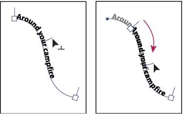
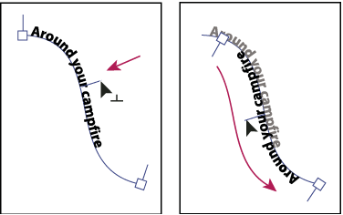

Move or flip text along a path
- Do one of the following:
-
To move text along the path, drag the center bracket along the path. Hold down Ctrl (Windows) or Command (Mac OS) to prevent the type from flipping to the other side of the path.

Moving type along a path
-
To flip the direction of text along a path, drag the bracket across the path. Alternatively, choose Type > Type On A Path > Type On A Path Options, select Flip, and click OK.

Flipping type along a path
 To
move type across a path without changing the direction of the type,
use the Baseline Shift option in the Character panel. For example,
if you created type that runs from left to right across the top
of a circle, you can enter a negative number in the Baseline Shift
text box to drop the type so that it flows inside the top of the
circle.
To
move type across a path without changing the direction of the type,
use the Baseline Shift option in the Character panel. For example,
if you created type that runs from left to right across the top
of a circle, you can enter a negative number in the Baseline Shift
text box to drop the type so that it flows inside the top of the
circle.For a video on creating type on a path, see www.adobe.com/go/vid0046.
-